Diagnóstico de los túneles de viento
Torre 3D · túnel 2D y túnel 3D · 22 de noviembre de 2026. Capturas y mediciones hechas con la app (ejemplo de la guía 2024, 20 pisos, planta 20 × 16 m). Lo que queda propuesto no está implementado: es para decidir.
- Ya arreglado: la silueta piso por piso. Una carpintería dibujada en PB no llegaba a los túneles: el corte no ofrecía PB, el 3D usaba la planta del nivel de arriba de cada piso y la carpintería solo se heredaba hacia abajo. Ahora cada piso usa la planta de su nivel, PB entra al corte, la carpintería se hereda también desde abajo y hay un botón «Copiar a todos los niveles».
- El límite más grande es la resolución: 0,8 a 1,1 m por celda en el 2D y 1,5 a 2,5 m en el 3D. Las curvas se vuelven escaleras y las ochavas chicas desaparecen.
- La medición ya distingue formas: con esquinas sustraídas o carpintería curva el arrastre baja 19–20 % y la sacudida lateral 22–25 % contra las esquinas vivas. Pero los valores absolutos están inflados por un canal angosto (bloqueo) y por el Reynolds bajo.
- Lo que más rinde para mejorar: paredes exactas (rebote interpolado) + colisión TRT, un canal más ancho, el túnel piso por piso con el 2D, y un 3D en el procesador para computadoras sin placa de video (mide 8 veces más que la placa emulada).
1. Cómo funcionan hoy
| Túnel 2D | Túnel 3D | |
|---|---|---|
| Método | Lattice Boltzmann D2Q9, BGK + Smagorinsky | Lattice Boltzmann D3Q19, BGK + Smagorinsky |
| Dónde corre | procesador, un núcleo (worker) | placa de video (WebGPU) |
| Geometría | un corte en planta: la carpintería del piso, o su losa | todos los pisos, cada uno con su planta |
| Grilla | 14 / 20 / 30 celdas por ancho; canal de 16 × 7 anchos | 96×48×40 · 160×80×64 · 256×128×96 |
| Celda (torre de 20 × 16 m, 64 m) | 1,0 · 0,8 · 0,5 m (según el ancho transversal) | 2,46 · 1,5 · 1,0 m (manda la altura) |
| Paredes | rebote a mitad de camino: la pared es el borde de las celdas (escalera) | |
| Reynolds | 150 · 1 000 · 20 000 (el real: ≈ 78 millones) | ≈ 5 000 |
| Velocidad medida acá | ≈ 17 M celdas/s (un núcleo, JavaScript) | ≈ 2 M celdas/s (placa emulada por software, SwiftShader) |
| Qué entrega | Cd, Cl eficaz, Strouhal, V crítica, tabla para comparar formas | Cp medio por cara contra el reglamento, cortes, líneas de corriente, vereda |
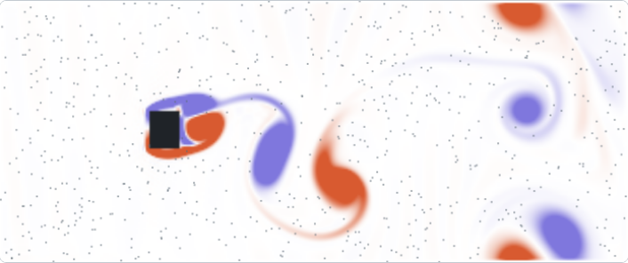
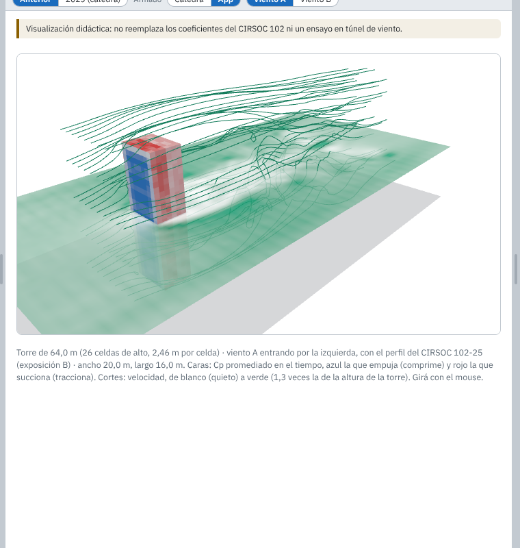
2. Diagnóstico
2.1 La silueta piso por piso no llegaba al túnel arreglado hoy
La carpintería curva dibujada en «Planta: PB» no aparecía en el túnel, por tres motivos que se sumaban:
- el corte del túnel 2D solo ofrecía los niveles sobre PB;
- el 3D armaba cada piso con la planta del nivel de arriba (la de PB no se usaba nunca);
- un nivel sin carpintería heredaba la del nivel de arriba; si estaba dibujada solo en PB, ningún piso la tomaba.
Cambios: cada piso usa la planta de su nivel (como se dibuja: «Planta: PB» es el piso de PB a 1º); PB entra a la lista de cortes y cada opción dice si usa carpintería o losa; si arriba no hay carpintería se toma la de abajo más cercana; el corte arranca en el primer nivel con carpintería propia; y si el corte usa la losa habiendo carpintería en otro piso, el túnel lo avisa. En Contornos, «Copiar a todos los niveles» (carpintería y losa).
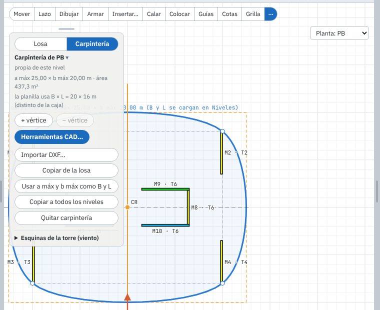
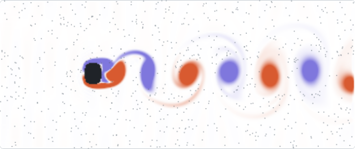
2.2 Resolución: las curvas son escaleras y los detalles chicos desaparecen
El túnel marca una celda como sólida si su centro cae adentro del contorno. Con celdas de 0,8 a 1,1 m, un radio de 3 m queda en dos o tres escalones y una ochava de 1 m casi no existe. Abajo, la misma planta con 14, 20 y 30 celdas por ancho (azul: el contorno real; gris: lo que ve el túnel).
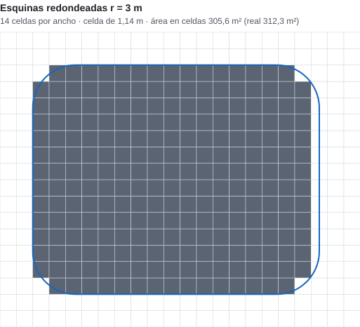
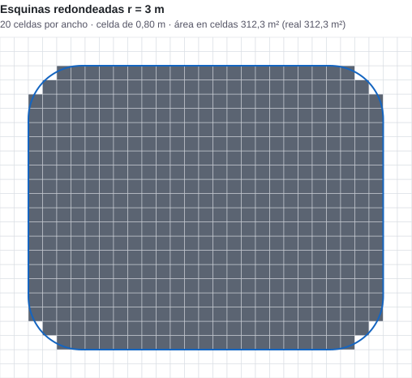
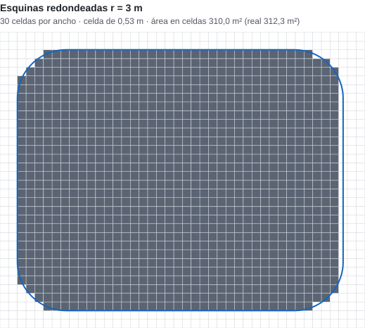
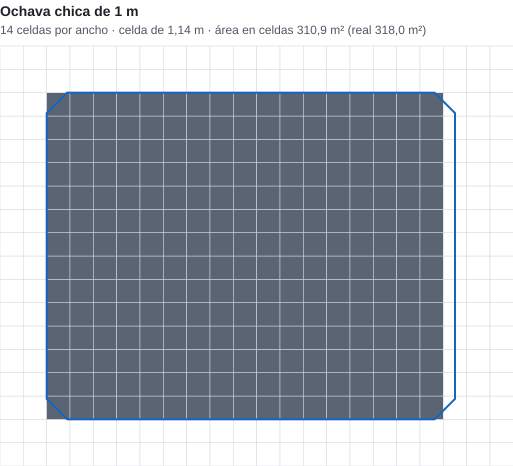
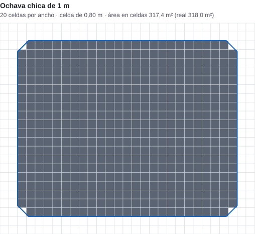
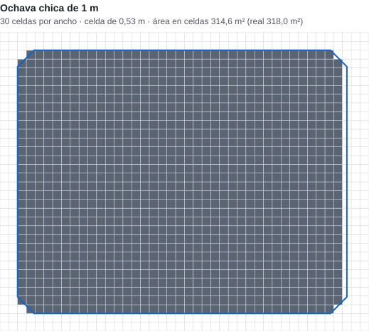
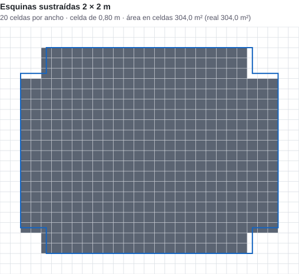
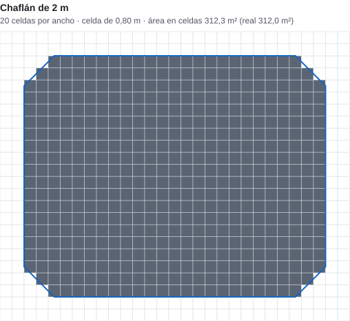
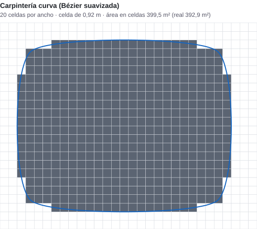
En el 3D es peor: la celda depende de la altura de la torre (el dominio contiene 1,5 veces la altura). Con la grilla rápida la celda es de 2,46 m y la curva se vuelve un prisma de bloques:
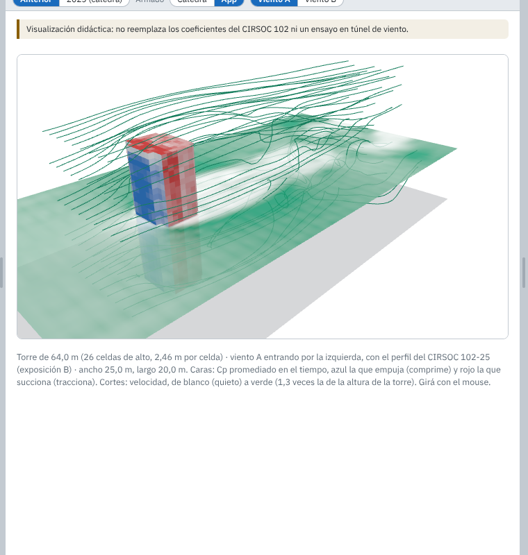
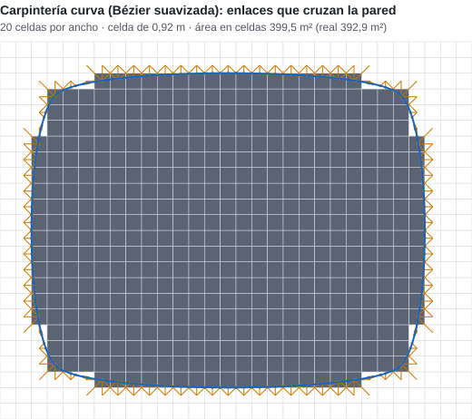
2.3 Mediciones del túnel 2D: las formas se distinguen, pero los valores están inflados
Mismo corte (10º), viento A, Reynolds medio (≈ 1 000), resolución normal (20 celdas), 150 pasadas del aire por el ancho (≈ 30 000 pasos, 85 s cada una en esta computadora):
| Planta | Cd (arrastre) | Cl eficaz (sacudida) | Strouhal | Δ Cd | Δ Cl |
|---|---|---|---|---|---|
| Esquinas vivas | 2,42 | ±1,38 | 0,174 | — | — |
| Redondeadas r = 3 m | 2,15 | ±1,24 | 0,182 | −11 % | −10 % |
| Chaflán 2 m | 2,20 | ±1,29 | 0,181 | −9 % | −7 % |
| Sustraídas 2 × 2 m | 1,96 | ±1,07 | 0,206 | −19 % | −22 % |
| Carpintería curva (Bézier) | 1,93 | ±1,03 | 0,237 | −20 % | −25 % |
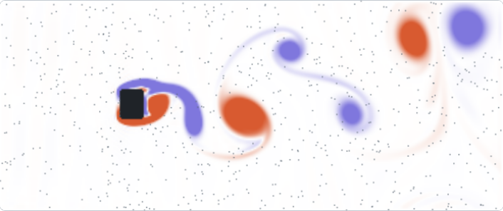
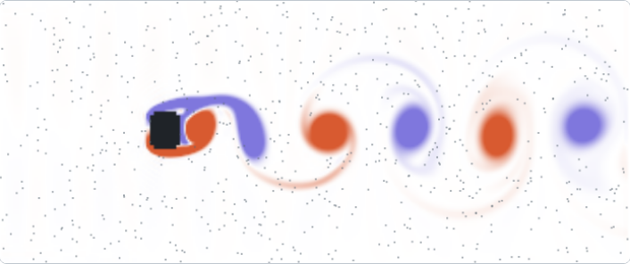
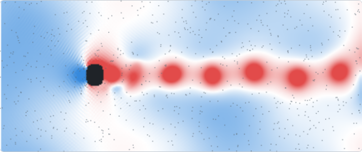
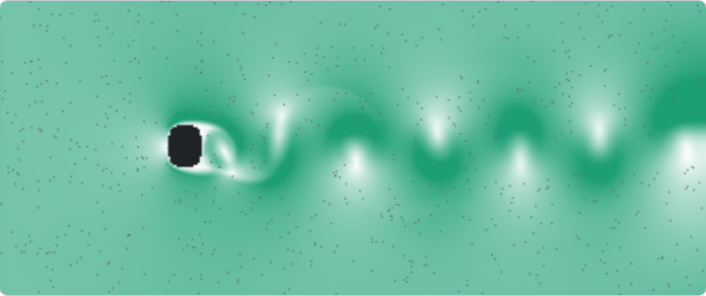
- La tendencia coincide con la bibliografía de túnel de viento: tratar las esquinas baja el arrastre y, sobre todo, la sacudida lateral.
- Los valores absolutos están altos. Un prisma cuadrado da Cd ≈ 2,1 y St ≈ 0,13 en túnel con poco bloqueo; acá salen 2,42 y 0,174. Las causas probables:
- el canal mide 7 anchos de alto y es periódico: bloquea ≈ 14 % y acelera el aire alrededor;
- el Reynolds de 1 000;
- las paredes en escalera.
- Redondeadas y chaflán rinden menos que en la bibliografía. En parte es la escalera: con 0,8 m por celda, un radio de 3 m es casi un chaflán. En parte es el Reynolds: el beneficio del redondeo depende mucho del Reynolds real.
2.4 Velocidad y computadoras modestas
- El 3D con la placa emulada por software (lo que tiene una computadora sin placa compatible) midió ≈ 2 M celdas/s. Con la grilla rápida son ≈ 9 pasos por segundo: una pasada del aire tarda unos 2 minutos.
- El 2D en JavaScript, en un solo núcleo del procesador, midió ≈ 17 M celdas/s.
- Conclusión: para las computadoras sin placa, un 3D grueso en el procesador con varios núcleos (workers) rendiría bastante más que la emulación de WebGPU. El criterio actual para la grilla liviana es de 164 M celdas/s, solo alcanzable con placa.
2.5 Lo que falta en los datos
- Cp a lo largo del perímetro de cada piso, con los picos de succión en las esquinas: lo más útil para diseñar la carpintería.
- Cd, Cl y fuerza piso por piso, con el perfil del viento, y el corte y el momento en la base, comparados con la planilla y el CIRSOC.
- Corridas largas, guardadas y reproducibles: hoy todo se pierde al cerrar la página.
- Confort en la vereda con un criterio reconocido (Lawson LDDC: sentarse, pararse, caminar).
- Exportación a Excel/CSV.
3. Programas parecidos
No pude sacar capturas de estos programas: este entorno de trabajo no tiene acceso a sus sitios. Van los enlaces, qué hacen y qué podemos tomar de cada uno. Las licencias son las que publica cada proyecto; antes de reutilizar código hay que leer su archivo de licencia.
Túneles de viento y CFD
| Programa | Qué es | Método · dónde corre | Licencia | Qué tomar |
|---|---|---|---|---|
| Fluid Dynamics Simulation (D. Schroeder, Weber State) | Túnel 2D didáctico en la página web | LBM D2Q9 en JavaScript · navegador | código a la vista; versiones en Java y Python | La simpleza: dibujar el obstáculo, trazadores, sin instalar nada. Es nuestro mismo enfoque. |
| Autodesk Flow Design (2014–2018) | «Túnel de viento virtual» para arquitectos, dentro de Revit | CFD propio · escritorio | comercial, discontinuado | Respuesta inmediata al cambiar la forma; presión pintada sobre las caras dentro del programa de dibujo. |
| Autodesk Forma (análisis de viento) | Viento para diseño temprano: confort del peatón | modo «rápido» con IA y modo «detallado» con CFD · nube | comercial | Dos modos (rápido para diseñar, detallado para documentar) y la escala de confort Lawson LDDC. |
| SimScale | CFD en la nube; incluye un LBM en GPU (Pacefish) para viento sobre edificios | LBM GPU · nube | comercial (tiene plan gratuito comunitario) | Publica casos de validación, entre ellos el edificio patrón CAARC: el modelo a seguir para mostrar cuánto se acerca el simulador. |
| Eddy3D (Cornell) | Viento y confort exterior en Grasshopper/Rhino | OpenFOAM · escritorio | gratuito (confirmar licencia) | Pensado para arquitectos; dominios cilíndricos para correr muchas direcciones de viento. |
| Butterfly (Ladybug Tools) | Arma y corre casos de OpenFOAM desde Grasshopper/Dynamo | OpenFOAM · escritorio (Linux o Docker) | GPL-3.0 | Flujo de trabajo de arquitecto: geometría → caso → resultados sobre el modelo. |
| OpenFOAM | La referencia del CFD libre (volúmenes finitos) | C++ · escritorio/servidor | GPL-3.0 | Validación y comparación; demasiado pesado para el navegador. |
| FluidX3D | LBM en GPU muy rápido y con poca memoria | OpenCL · cualquier GPU | gratuito no comercial | Técnicas para ahorrar memoria (16 bits por población) y velocidad: base de un 3D más fino en la misma placa. |
| XLB (Autodesk Research) | Biblioteca LBM diferenciable en Python | JAX / Warp · GPU | Apache-2.0 | Colisiones y bordes de referencia con licencia permisiva; útil para validar nuestras cuentas. |
| OpenLB · Palabos · waLBerla | Bibliotecas LBM de investigación | C++ · CPU/GPU, paralelo | GPL-2.0 · GPL-3.0 · GPL-3.0 | Bordes curvos (Bouzidi), refinamiento de grilla y modelos de turbulencia probados. |
| lattice-boltzmann-simulator | LBM en WebGL2 en el navegador | WebGL2 · navegador | MIT | Cómo correr LBM en WebGL2: la base del respaldo para computadoras sin WebGPU. |
| Turbulence-sim | LBM multifísica en el navegador | WebAssembly + WebGL2 | código abierto (ver repositorio) | WebAssembly para el cálculo en el procesador: otro camino para computadoras modestas. |
Cálculo estructural de torres
| Programa | Qué es | Licencia | Relación con Torre 3D |
|---|---|---|---|
| OpenSees | Elementos finitos para estructuras, sísmico y no lineal | uso educativo y de investigación, no comercial | Ya se usa para verificar el FEM de la app (mismos resultados). |
| PyNite | Análisis elástico 3D de pórticos en Python | ver repositorio | También se usó para verificar el FEM. |
4. Propuestas
Ordenadas por lo que rinden. Todas pensadas para que el simulador ande en la mayor cantidad de computadoras.
| # | Propuesta | Qué mejora | Costo en la computadora | Trabajo |
|---|---|---|---|---|
| 0 | Silueta piso por piso en los túneles | La carpintería de cada piso llega al viento | nada | hecho |
| 1 | Paredes exactas (rebote interpolado de Bouzidi) + colisión TRT (Ginzburg, con el parámetro «mágico» Λ = 3/16, que deja la pared donde corresponde sin depender de la viscosidad) | Curvas, ochavas y diagonales sin escalera; fuerzas menos ruidosas; más estable con grillas gruesas | +5 a 15 % | medio |
| 2 | Canal más ancho en el 2D (10–12 anchos) o corrección por bloqueo | Cd y Strouhal más cerca de los valores de túnel (hoy bloquea ≈ 14 %) | +40–70 % de celdas, o nada con la corrección | bajo |
| 3 | Túnel piso por piso con el 2D (2,5D): cada planta distinta en paralelo, con el perfil del CIRSOC 102-25 | Cd, Cl, St y fuerza por nivel; corte y momento de la simulación contra la planilla. Es «la silueta piso por piso». | solo procesador; minutos | medio |
| 4 | Corrida larga y archivo para reproducir (.torreviento) | Promedios estables (Cp medio, rms y picos); se calcula en una computadora y se mira en cualquiera, sin placa; video WebM | el de la simulación | medio |
| 5 | Datos nuevos: Cp perimetral por piso, fuerza por piso, confort Lawson en la vereda, exportar a Excel | Lo que sirve para diseñar la carpintería y para la entrega | casi nada | medio |
| 6 | 3D sin placa: en el procesador con varios núcleos (workers + WebAssembly) y respaldo WebGL2 | El 3D en muchas más computadoras (la placa emulada rinde 8 veces menos que el procesador) | según la computadora | medio–alto |
| 7 | Más detalle donde importa: banda de pisos periódica, dominio más ajustado, refinamiento local en el 2D | 3 a 4 veces más detalle en planta con las mismas celdas | igual | bajo a alto |
| 8 | Validación: prisma cuadrado, cilindro y edificio patrón CAARC, con los números en pantalla | Saber cuánto se acerca el simulador y mostrarlo | nada | bajo |
Límites que no cambian
- Ningún simulador de navegador llega al Reynolds real de una torre. Con aristas vivas importa poco; con curvas, el resultado da la tendencia (qué forma es mejor), no el número final.
- Sirve para comparar formas y entender el flujo. No reemplaza al CIRSOC 102 ni a un ensayo en túnel de viento.
Fuentes
- D. V. Schroeder, Fluid Dynamics Simulation y Fluid simulations for undergraduates.
- Autodesk: Flow Design, productos retirados, Wind analysis in Forma, Forma blog.
- SimScale: CAARC facade pressure, LBM en GPU, criterios de Lawson.
- Eddy3D; Butterfly y su README; licencia de OpenFOAM.
- FluidX3D; XLB y su artículo; OpenLB; waLBerla; Palabos.
- lattice-boltzmann-simulator (WebGL2); Turbulence-sim.
- Bordes curvos: comparación rebote interpolado / borde inmerso, condición de un nodo. TRT: posición de la pared y Λ = 3/16.
- CAARC: Thordal et al., estándar de CFD para torres. Esquinas: chaflanes en el CAARC, efecto de las esquinas en cargas y presiones locales.
- Teoría de franjas (2D por tramos): Modelling of flow past long cylindrical structures.
- Estructuras: OpenSees, licencia (Wikipedia), PyNite.